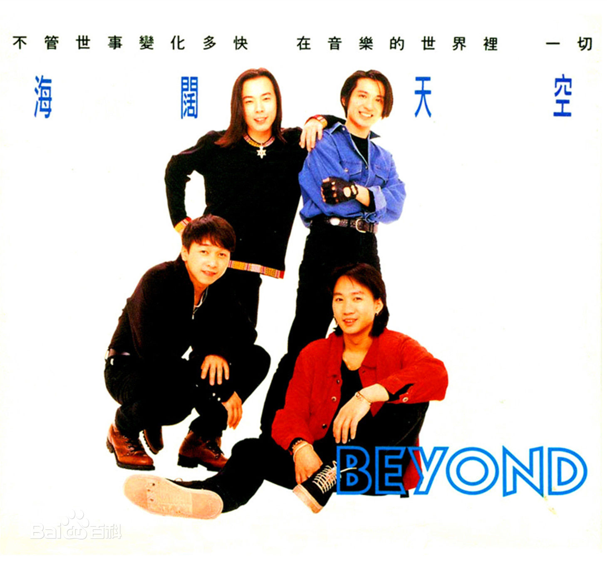

海阔天空

- 专辑：乐与怒
- 表演者:Beyond
- 作词:黄家驹
1992年，Beyond将事业发展重心移至日本，同时结束了与新艺宝长期合作的关系。成为国际化的乐队一直是Beyond的梦想，不过由于日本对于音乐制作上的严格要求，加上语言不通，Beyond颇为消沉了一阵子，但他们仍然十分努力
歌词欣赏
今天我 寒夜里看雪飘过 怀着冷却了的心窝漂远方 风雨里追赶 雾里分不清影踪 天空海阔你与我 可会变（谁没在变） 多少次 迎着冷眼与嘲笑 从没有放弃过心中的理想 一刹那恍惚 若有所失的感觉 不知不觉已变淡 心里爱（谁明白我） 原谅我这一生不羁放纵爱自由 也会怕有一天会跌倒 背弃了理想 谁人都可以 哪会怕有一天只你共我 今天我 寒夜里看雪飘过 怀着冷却了的心窝漂远方 风雨里追赶 雾里分不清影踪 天空海阔你与我 可会变（谁没在变） 原谅我这一生不羁放纵爱自由 也会怕有一天会跌倒 背弃了理想 谁人都可以 哪会怕有一天只你共我 仍然自由自我 永远高唱我歌 走遍千里 原谅我这一生不羁放纵爱自由 也会怕有一天会跌倒 背弃了理想 谁人都可以 哪会怕有一天只你共我 背弃了理想 谁人都可以 哪会怕有一天只你共我 原谅我这一生不羁放纵爱自由 也会怕有一天会跌倒 背弃了理想 谁人都可以 哪会怕有一天只你共我